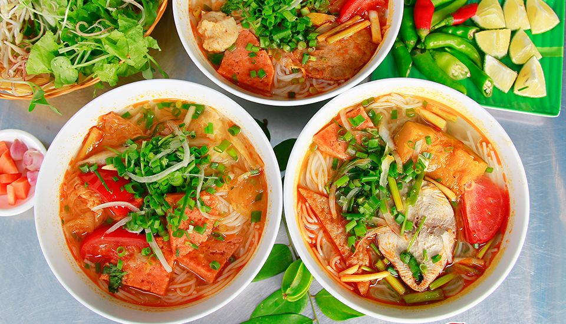
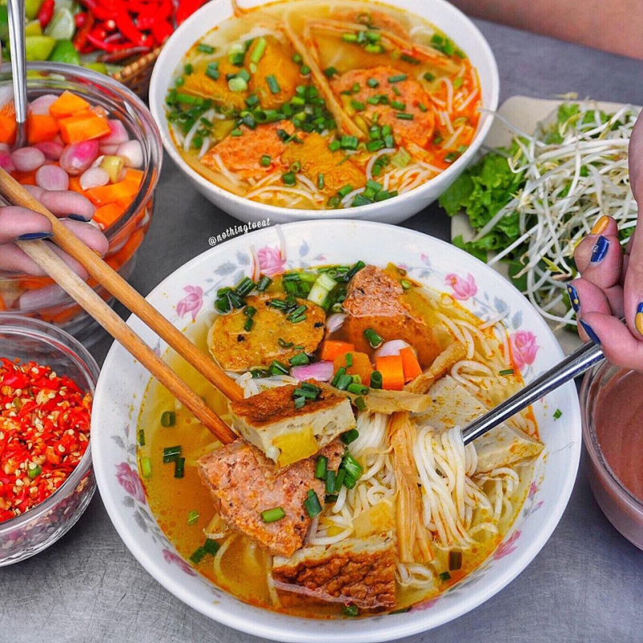

Bún chả cá là món ăn dân dã và phổ biến ở khắp các tỉnh miền Trung. Tuy nhiên, ở mỗi vùng khác nhau Bún chả cá lại có nhiều biến tấu khác nhau. Có thể nói, Bún chả cá Đà Nẵng là một trong số ít tỉnh miền Trung để lại được ấn tượng sâu đậm trong lòng du khách và rất được yêu thích trên cả nước.

Đặc trưng món bún chả cá ở Đà Nẵng không chỉ ở cái vị mặn mà, cay cay rất riêng của vùng cát nóng miền Trung, mà còn có sự kết hợp hài hoà giữa sợi bún, chả cá, nước nhân và cả rau sống. Để giữ nguyên vẹn hương vị có được từ bao đời đó, các đầu bếp phải đảm bảo các nguyên tắc trong từng các công đoạn chế biến.
Đầu tiên sợi bún được làm từ loại gạo lúa mới, hội đủ 3 yếu tố: Thơm, ngon, dẻo. Trước khi nấu bún, bột gạo được ngâm qua ít nhất hai đêm. Trong quá trình ngâm bột, thường xuyên thay nước mới để giúp sợi bún trong, dài hơn và đặc biệt bún không có vị chua.
Công đoạn làm bánh chả cũng rất quan trọng. Ở Đà Nẵng, các đầu bếp thường chọn những con cá chuồn, cá nhồng, cá mối, cá cháy, cá rựa, cá thu còn tươi nguyên, đem nạo lấy phần thịt trắng, ướp cùng tiêu, muối, đường thật thấm thía. Không quên thêm một ít hành lá đã băm nhuyễn. Thịt cá sau khi trộn đều với gia vị, được quết cho thật nhuyễn, mịn sau đó đánh thành bánh chả hình tròn hoặc hình trụ dài. Bánh chả làm xong, cắt lát vừa ăn sau đó chiên hoặc hấp.
Điều đặc biệt hấp dẫn được người ăn từ tô bún còn có cả nước nhân. Người ta chọn những con cá còn tươi nguyên xanh của xứ biển như cá ngừ, cá thu,… làm thật sạch, để ráo nước, xắt từng lát vừa ăn. Tiếp tục là khâu ướp cá. Bên cạnh nêm nếm muối vừa miệng cần phải cho thêm phần nén, hành giã nhỏ. Đồng thời tiêu ở đây phải là tiêu sọ để khi thưởng thức, người ăn mới cảm nhận được vị cay nồng đầy kích thích nơi đầu lưỡi. Cho dầu ăn vào chảo, phi thơm hành tím cho nước vào nồi nấu sôi, trút cá đã ướp thấm vào. Cá sôi một dạo cho thịt cá chín, mới thả bánh chả, cà chua, bí đỏ, một ít bắp xu, hành xắt khúc, ớt cắt lát vào. Người ăn khi thưởng thức sẽ cảm nhận vị ngọt lịm của nước nhân được tiết ra từ xương, thịt cá và những lát bánh chả
Bún chả cá được dọn chung với rổ rau sống tươi xanh với nhiều loại rau nhìn “mát cả mắt”. Kèm theo đó là đa dạng các loại gia vị để thực khách tha hồ “nêm nếm” sao cho hợp khẩu vị cuả mình. Thông thường ăn kèm với món bún chả cá ở Đà Nẵng còn có khá nhiều loại nước chấm, mắm nêm, nhưng thông dụng nhất vẫn là nước mắm chua ngọt. Nước mắm cá cơm hòa tan với đường và ớt tươi giã nhuyễn. Khi ăn, vắt thêm miếng chanh vào cùng với ớt tỏi xay nhuyễn, tương ớt, hành đu đủ xắt cục ngâm chua,…
Với sự “trau truốt” trong khâu lựa chọn nguyên liệu. Bún chả cá có vị ngọt thanh tự nhiên của chả cá, nước dùng. Miếng chả cá dai dai, thơm ngon. Với sự kết hợp hài hòa của vị chua, cay, mặn, ngọt của gia vị,…tạo nên hương nồng vị đạm đà của tô bún.
Tô bún chả cá bốc khói nghi ngút, được điểm xuyến vài cộng ngò rí xanh rờn trên mặt nước màu đỏ trông rất duyên dáng. Xen lẫn đó là những lát chả cá chiên hoặc hấp cắt theo hình con thoi bắt mắt. Nếu bạn cảm thấy nhạc miệng có thể cho vào một ít mắm ruốt sẽ tạo nên mùi vị đậm đà và đặc trưng. Đặc biệt không thể thiếu đối với món bún chả cá là ớt tỏi giả và hành hương ngâm giấm đường. Vị chua chua ngọt ngọt của hành hương cộng với vị cay xé của ớt tỏi sẽ cho bạn những trải nghiệm thú vị khó tả và không thể nào quên đối với món bún chả cá Đà Nẵng.
Bún chả cá là món ngon tại Đà Nẵng, “khoái khẩu” của mọi lứa tuổi. Là món ăn rất thích hợp để dùng thay cơm hay sau những buổi vận động mệt nhoài.
Vì món ăn rất nổi tiếng nên Đà Nẵng có hàng chục, hàng trăm quán bún chả cá. Nhưng trong số đó, không phải quán nào cũng có thể chiều lòng các tín đồ sành ăn. Dưới đây là gợi ý về những quán Bún chả cá “chuẩn vị” nhất, ngon nhất ở Đà Nẵng cho những bạn cần và muốn thưởng thức hương vị Bún chả cá Đà Nẵng nhé!
Địa chỉ quán ăn
Bún chả cá Bà Thuý: 21A Ông Ích Khiêm, Đà Nẵng
Bún Bà Phiến: 63 Lê Hồng Phong, Đà Nẵng
Bún chả cá Bà Bé: 120 Trần Cao Vân, Đà Nẵng